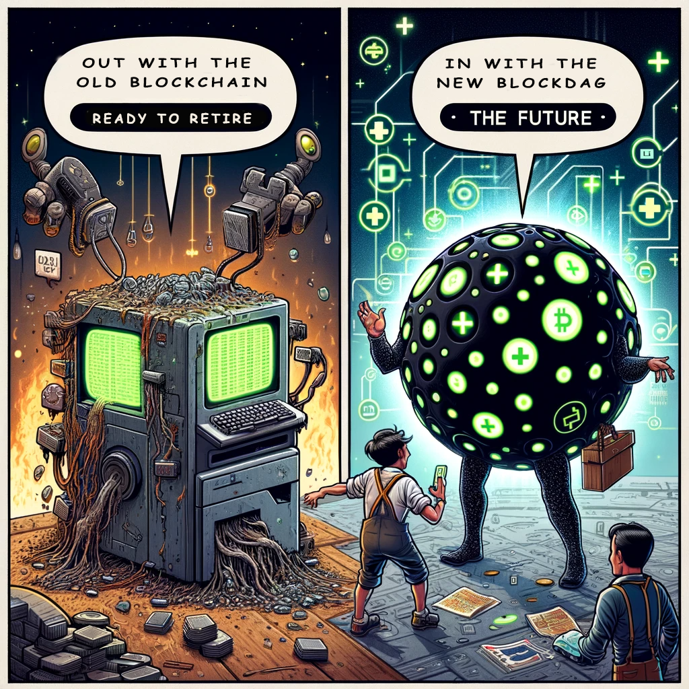

Build on BlockDAG
BlockDAG is next evolution of blockchain technology, enabling native Layer 1 scaling on an unprecedented level, while maintaining high levels of security and decentralization.
Who is using BlockDAG?
Taraxa
Taraxa (taraxa.io) - Taraxa is the first modern blockchain project to take advantage of BlockDAG. Founded in 2018, with years of research and a meticulous refactoring of the Ethereum Virtual Machine (EVM) to takes advantage of BlockDAG while maintaining compatibility with popular Dapp structures and tooling. Taraxa is a Layer 1 solution that aims to enable Web3 to solve real world decentralization problems.
Kaspa
Kaspa (kaspa.org) - Kaspa is a true currency token in the vain of the original Bitcoin. Founded in 2021 by some of the mathematicians who developed the Ghost consensus protocol, which was revolutionary in taking advantage of the BlockDAG strucuture to scale chains. Like Bitcoin, Kaspa is Proof or Work (PoW) and aims to be a digital silver, a true fast, decentralized payment platform in the spirit of Satoshi's original vision.
DAG - Directed Acyclic Graph
A DAG is just a simple mathematical structure, no more important to the BlockDAG than the concept of a chain is to the blockchain. It's nodes are connected, each having a known predecesor, without looping or cycling backwards. Unlike a chain where one node exists at a time, in DAG, multiple nodes can form simmulatenously from the same parent.
The magic in BlockDAG exists in how these nodes (or blocks in this case) are ordered and executed.
Blockchains, DAGs and BlockDAGs
BlockDAG allows multiple blocks to be added to the network simultaneously, significantly increasing transaction throughput compared to the single-chain approach in traditional blockchains. The parallel nature of BlockDAG provides better scalability, handling more transactions per second (TPS) as the network grows, compared to the linear growth limitations of traditional blockchains. BlockDAG's structure can potentially offer improved security. The interconnectedness of blocks makes it more challenging for malicious actors to alter the transaction history.
DAGs have been used for a long time in crypto projects (for example IOTA). Typically though, the transactions themselves are linked in a DAG structure, with each transaction needing to validate the previous ones. BlockDAG's use of traditional blocks provides advantages in scalability, security and confirmation times.
